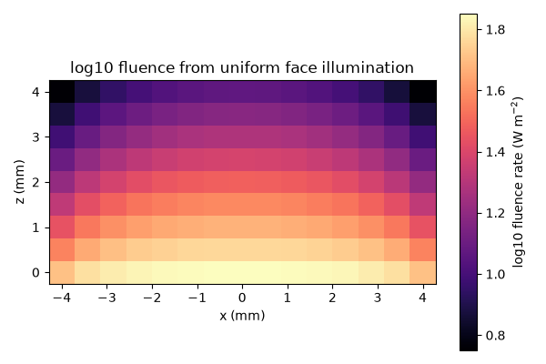

Note
Go to the end to download the full example code.
Uniform illumination on a sample face#
Illuminate an entire finite sample face with a uniform diffuse partial current, solve the P1 finite-element model, and inspect the three-dimensional fluence field. The input power is already coupled into the sample.
import os
import matplotlib.pyplot as plt
import numpy as np
import MomentRT
from MomentRT import (
CartesianMesh,
Diffusion,
Material,
RobinBoundary,
Simulation,
StructuredMedium,
UniformSurfaceSource,
ureg,
)
show_figures = os.environ.get("MOMENTRT_SPHINX_GALLERY") != "1"
Create the homogeneous slab#
Set all optical properties and dimensions explicitly for this wavelength.
material = Material(
phase_function=MomentRT.phase_function.HenyeyGreenstein(),
absorption=0.03 / ureg.millimeter,
reduced_scattering=1.0 / ureg.millimeter,
refractive_index=1.4,
)
sample = StructuredMedium(
origin=np.array([-4, -4, 0]) * ureg.millimeter,
size=np.array([8, 8, 4]) * ureg.millimeter,
)
sample.add_background(
material=material,
)
Configure the mesh, source, and six faces#
The incoming diffuse power is spread uniformly across the complete z_min face. All faces use the same explicit effective diffuse reflectance.
mesh = CartesianMesh.from_sample(
sample=sample,
shape=(15, 15, 9),
)
source = UniformSurfaceSource(
face="z_min",
wavelength=970 * ureg.nanometer,
optical_power=1 * ureg.milliwatt,
)
boundary = RobinBoundary(
effective_reflectance=0.5,
)
solver = Diffusion(
boundaries={
"x_min": boundary,
"x_max": boundary,
"y_min": boundary,
"y_max": boundary,
"z_min": boundary,
"z_max": boundary,
},
)
Solve and view the field#
The 3D plot is made from the nodal finite-element fluence values.
simulation = Simulation(
medium=sample,
source=source,
mesh=mesh,
solver=solver,
)
result = simulation.run()
# The illumination patch is independent of the fluence opacity control.
figure = result.fluence.plot(
view="volume",
scale="log",
overlays=[source],
show=show_figures,
)
Preview a central plane#
A static section complements the interactive volume with a penetration profile.
fluence_values = result.fluence.values.to("watt / meter**2").magnitude
center_y = mesh.shape[1] // 2
x_axis = (
(mesh.origin[0] + np.arange(mesh.shape[0]) * mesh.spacing[0])
.to("millimeter")
.magnitude
)
z_axis = (
(mesh.origin[2] + np.arange(mesh.shape[2]) * mesh.spacing[2])
.to("millimeter")
.magnitude
)
figure_static, axes = plt.subplots(figsize=(6, 4))
image = axes.pcolormesh(
x_axis,
z_axis,
np.log10(fluence_values[:, center_y, :].T),
shading="auto",
cmap="magma",
)
axes.set_aspect("equal")
axes.set_xlabel("x (mm)")
axes.set_ylabel("z (mm)")
axes.set_title("log10 fluence from uniform face illumination")
figure_static.colorbar(image, ax=axes, label="log10 fluence rate (W m$^{-2}$)")
figure_static.tight_layout()
if show_figures:
plt.show()
print(f"Incoming power: {result.energy_balance['incoming_power']}")
print(f"Absorbed power: {result.energy_balance['absorbed_power']}")
print(f"Escaping power: {result.energy_balance['escaping_power']}")

Incoming power: 1 milliwatt
Absorbed power: 0.00020454076689282107 watt
Escaping power: 0.000795459233107183 watt
Total running time of the script: (0 minutes 0.233 seconds)